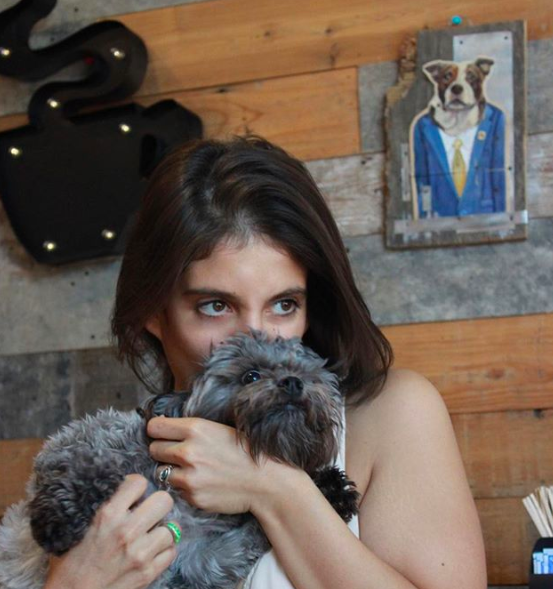

About Me
I'm a huge animal lover! And yes, I'm that awkward person at the party, who plays with the pets instead of socializing with the humans. Currently, I have two hamsters, Apple and Dalmation, one dog, Sage, and a rescued dove, Bubbles. Hopefully in a few months, I'll be welcoming a rescued Chinchilla into the mix.
Every summer, Sage and I drive up to Montrose Dog Beach once a week to work on her swimming skills. We are working hard. As of last summer, she began to swim out with me, but if it gets too deep, I become her human surf board, which results in a ton of small scratches on my arms, shoulders, and legs. One day, Sage will be an Olympic swimmer if I have anything to do with it!